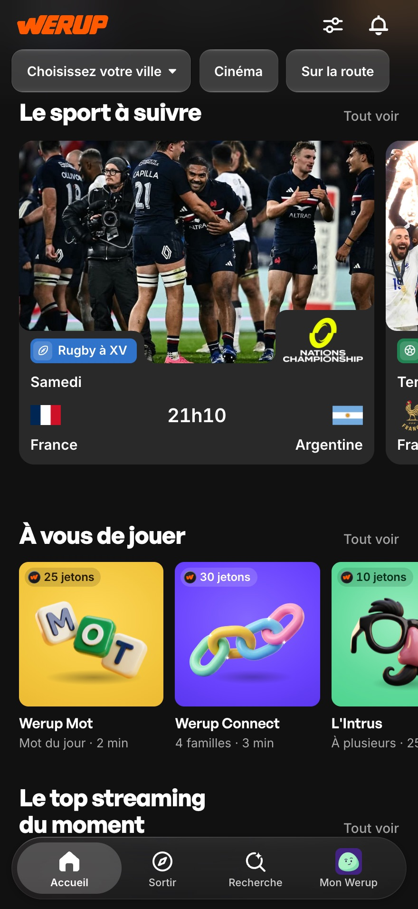

Captures de la vraie application en ligne (werup.app), iPhone Pro Max, le 18/11 à 2 h. Ouvrir Werup
Le logo a sa propre découpeEn bas à droite, en miroir de la capsule. Entier, en grand, jamais sur les visages. Le score en face-à-face.

Un résultat« Terminé · Dim. 15 nov. », le score au milieu dans la police de Werup, le perdant en gris. La photo montre le vainqueur.La Ligue 1 enfin entièreSur sa plaque blanche, plus jamais coupée.Sur un iPhone plus petitLargeur d'un iPhone 6, 7 ou 8 : la carte suivante dépasse juste.La page de l'USAPLa même carte pour ses matchs.